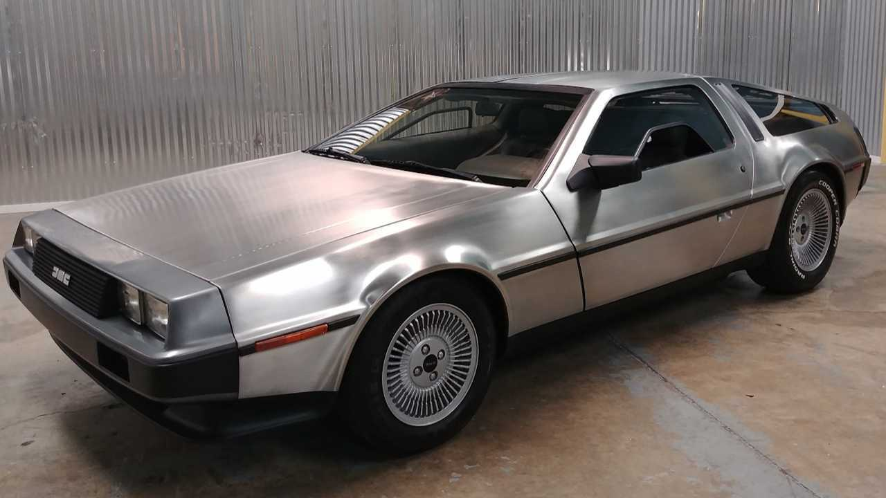

A trilogia De Volta para o Futuro acompanha as aventuras de Marty McFly e do cientista Doc Brown em viagens pelo tempo utilizando um DeLorean modificado. Ao longo dos três filmes, eles visitam diferentes épocas, enfrentam desafios e descobrem como suas escolhas podem mudar o passado, o presente e o futuro. Misturando ficção científica, aventura e comédia, a saga se tornou um clássico do cinema.
O DeLorean é um carro esportivo que chama atenção pelo seu visual futurista e marcante. Sua carroceria prateada de aço inoxidável, portas que abrem para cima e design diferenciado fazem dele um dos carros mais famosos do cinema. Nos filmes, ele é modificado pelo Doc Brown e transformado em uma máquina do tempo capaz de viajar entre diferentes épocas ao atingir 88 mph.


De Volta para o Futuro (1985)
Marty McFly é um adolescente que viaja acidentalmente de 1985 para 1955 utilizando uma máquina do tempo construída por Doc Brown. No passado, ele conhece seus pais quando eram jovens e acaba interferindo no primeiro encontro deles. Agora, Marty precisa fazer com que os dois se apaixonem novamente e encontrar uma maneira de voltar para sua época antes que seja tarde demais.
De Volta para o Futuro II (1989)
Marty e Doc viajam para 2015 para evitar problemas que poderiam acontecer com a família McFly. Durante a viagem, eles enfrentam situações inesperadas e acabam permitindo que Biff Tannen altere acontecimentos do passado, criando uma realidade completamente diferente. Marty precisa voltar a 1955 para corrigir os acontecimentos e restaurar o futuro original.
De Volta para o Futuro III (1990)
Depois de descobrir que Doc ficou preso em 1885, Marty viaja até o Velho Oeste para resgatá-lo. Lá, eles enfrentam novos desafios, incluindo o perigoso Buford Tannen. Durante a aventura, Doc conhece Clara Clayton e acaba se apaixonando, fazendo com que sua vontade de voltar ao futuro fique dividida entre permanecer no passado ou retornar ao presente.